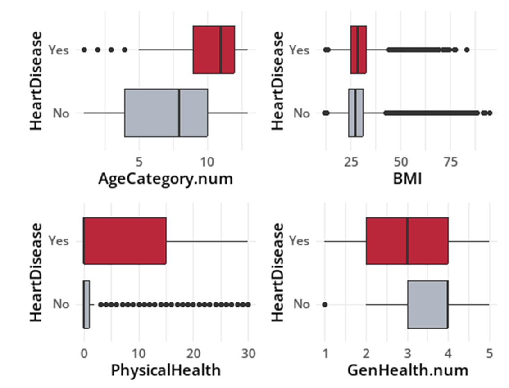

Heart Disease Prediction
Using routinely-collected patient survey data to classify reported heart disease status, and confronting what a model can and can't do when the outcome it's predicting is rare.
How well do survey features distinguish reported heart disease status?
This project evaluates whether demographic and health-survey features distinguish respondents who reported heart disease from those who did not. It is a cross-sectional classification task, not a prospective forecast of future cardiovascular events.
CDC BRFSS survey respondents
319,795 respondents from the CDC's Behavioral Risk Factor Surveillance System, split 80/20 into training (255,837) and test (63,958) sets, stratified to preserve the class balance.

Respondents with heart disease skewed visibly older and reported more days of poor physical health, an early signal of which predictors would carry the most weight.
From an interpretable baseline to a tuned comparison
I started with an additive logistic regression for interpretation, then let GLMNET select a non-additive specification with polynomial and interaction terms, and benchmarked both against LDA, QDA, and kNN on held-out data.
The non-additive logistic model had the highest reported test AUROC
The non-additive logistic model had an AUROC of 0.845 versus 0.841 for the additive baseline, a small numerical improvement. Both exceeded the reported LDA, QDA, and kNN AUROCs; without uncertainty estimates for the difference, the 0.004 gain should not be treated as a demonstrated meaningful improvement.
| Model | AUROC |
|---|---|
| Non-Additive Logistic (GLMNET-selected) | 0.845 |
| Additive Logistic (interpretable baseline) | 0.841 |
| LDA | 0.637 |
| QDA | 0.622 |
| kNN | 0.586 |
At a threshold tuned for the rare positive class, sensitivity and specificity told a more complicated story than AUROC alone:
| Model | Sensitivity | Specificity | PPV | NPV |
|---|---|---|---|---|
| Additive Logistic | 74.2% | 78.0% | 24.0% | 97.0% |
| LDA | 30.7% | 88.2% | — | — |
| kNN | 89.7% | 65.2% | — | — |
Associations in the fitted model
Age had a strong adjusted association
Holding other predictors constant, respondents 80+ had roughly 25× the odds of heart disease of the 18–24 reference group (95% CI 20.7–30.8), a near-monotonic climb across every age band.
Self-rated general health carried outsized signal
Respondents reporting "poor" general health had 6.57× the odds of heart disease versus "excellent" (95% CI 6.01–7.18), a single subjective survey question doing real predictive work.
Stroke history nearly tripled the odds
A prior stroke was associated with 2.85× the odds of heart disease (95% CI 2.71–2.99), the strongest binary clinical-history predictor in the model.
Sex was a persistent, moderate factor
Men had roughly double the odds of women (95% CI 1.97–2.10) after adjusting for age, health status, and the other 15 predictors.

The figure summarizes selected categorical associations from the fitted model. Odds-ratio magnitudes depend on the reference category and should not be treated as a universal feature-importance ranking.